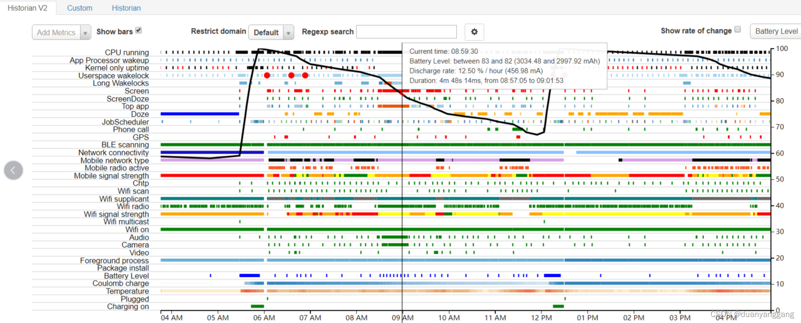
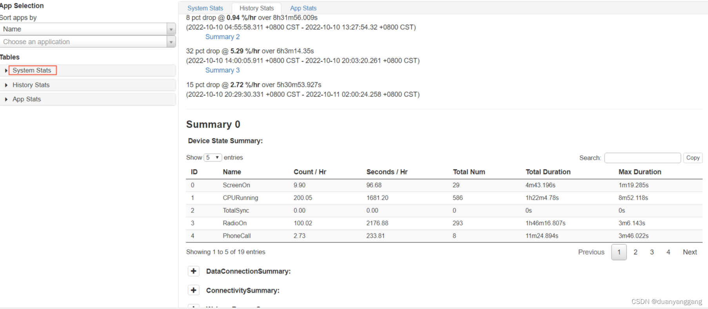
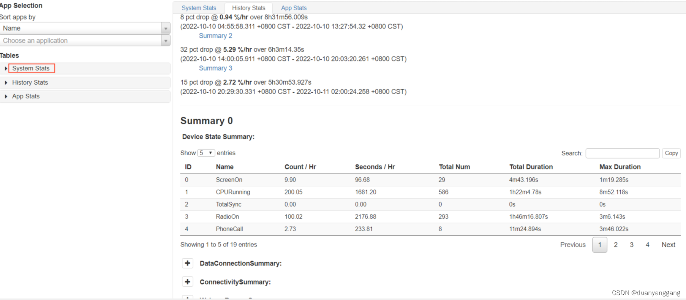
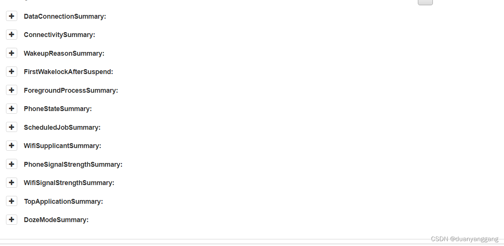
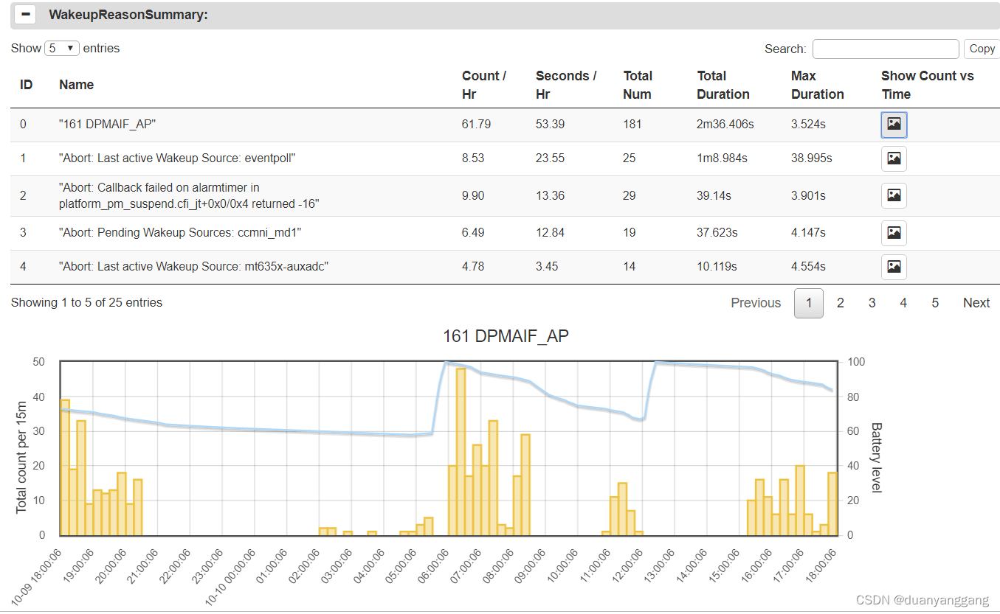

bugreport
bugreport图片如下


bugreport一般用来分析功耗问题（休眠待机，后台待机，游戏，视频，相机场景等），下面一一介绍各项代表的意义
CPU running: CPU运行状态，休眠 或者 唤醒
Kernel only uptime: 只有内核运行的时间
Userspace wakelock:记录Android中PowerManagerService的wake_lock模块的工作时间(有任务需要唤醒CPU时，就会开启 Userspace wakelock)
Top app: 当前手机运行的app及前台app
Screen: 屏是否被电量，用于判断是否处于休眠态
Activity Manager Proc:活跃的用户进程
Doze:是否进入doze模式(doze模式还分light和full，light模式进入一段时间后进入full模式)
Phone call: 是否有打电话事件
GPS: 是否有gps调度事件
JobScheduler: 调度事件，如下载或上传等调度
SyncManager: 同步事件，如计步器
Phone scanning: 手机是否在扫描移动信号网络
Phone state: 手机电话状态，in（有数据网络）/out（无数据网络）/off(飞行模式)三种
Network connectivity: 数据网络连接类型， 有TYPE_MOBILE和TYPE_WIFI和TYPE_NONE
Mobile network type: 网络信号类型:比如ILT,OOS,NONE等
Mobile radio active: 表明手机是否有信号，空白表明手机无信号。移动蜂窝信号
Mobile signal strength: 手机信号强度，有great/good/moderate/poor/none五种
Wifi full lock: 持有Wifi full lock的事件
Wifi supplicant: 是否有wifi请求
Wifi radio: 是否正在通过wifi传输数据
Wifi signal strength: wifi信号强度（great\good\moderate\poor）
Wifi on: 是否开启wifi
Wifi running:wifi组件是否在工作
Health:电池健康状态的信息
Audio: 是否有使用音频
Video: 是否有播放视频
Foreground process: 前台进程
Temperature: 手机电池温度。
Battery level: 可以看出电量的变化，并且有电量变化曲线
Plugged: 是否有插充电器或者usb
Crashes(Logcat): 某个时间点出现crash的应用
Logcat misc:是否在导日志
system Stats History Stats App Stats
如下图片

system Stats
System Stats主要有Duration/Realtime，Metric，Device’s Power Estimates，Userspace Wakelocks，SyncManager Syncs，Mobile Radio Activity Per App，Mobile Traffic Per App，WiFi Scan Activity Per App，WiFi Full Lock Activity Per App，Kernel Wakesources，Kernel Wakeup Reasons， App Wakeup Alarms，GPS Use By App这些小类型，这些都是描述系统相关的特性。
History Stats 图片如下选项

ConnectionSummary 代表移动数据连接类型以及每种类型连接时间长度
WakeupReasonSummary代表唤醒源有哪些，一共唤醒了多少次，以及唤醒分布等
如下图（图中依次列出了唤醒源，以及唤醒时间点）

firstwakelockaftersuspend代表深度休眠状态下第一次持锁的线程
ForegroundProcessSummary代表当前系统的前台进程
Phonestatesummary代表手机进入过的模式，有信号，无信号，飞行模式
schedulejobsummary代表异步调用的相关服务的统计
wifisupplicantsummary代表wifi请求的统计
PhoneSignalStrengthSummary代表移动数据信号强度的统计
WifiSignalStrengthSummary代表wiif信号强度的统计
TopapplicationSummary代表手机最上层app运行的统计
DozemodeSummary代表Doze模式的统计，包括关闭，light, full
App Stats
App Stats主要包括app包名，版本号，UID，耗电量，在前台运行的时长，使用震动器的时长，使用多少个wakeup alarm，网络信息，Wakelocks信息，Service信息，进程信息，Scheduled Job等


 149
149


 被折叠的 条评论
为什么被折叠?
被折叠的 条评论
为什么被折叠?
 到【灌水乐园】发言
到【灌水乐园】发言